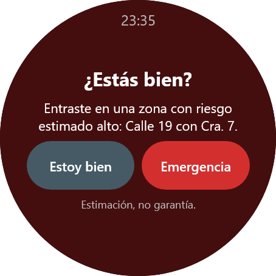
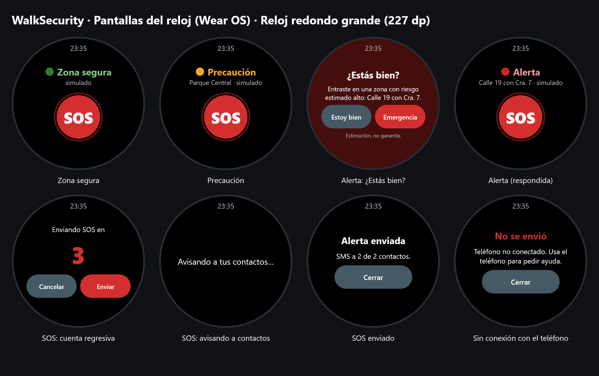

Seguridad personal · Wear OS + Android
Tu reloj te avisa. Un botón avisa a los tuyos.
WalkSecurity muestra en el smartwatch si la zona donde caminas es segura, de precaución o de alerta, vibra cuando el riesgo sube y, con el botón SOS, envía tu ubicación por SMS a tus contactos de confianza.
Las zonas de riesgo son estimaciones basadas en datos, no una garantía de que una persona esté o no en peligro. La app no sustituye a la línea de emergencias (123 en Colombia).

Simulador del reloj
Haz clic en el reloj como si lo tuvieras en la muñeca. El panel hace de teléfono: cambia la zona, desconéctalo o cambia cuántos contactos tiene. Aquí todo es simulado: no se envía ningún SMS.
Zona actual (la calcula el teléfono)
Al subir de nivel el reloj vibra. En Alerta pregunta «¿Estás bien?».
Teléfono simulado
Contactos de emergencia registrados
Registro de eventos
- Aquí verás lo que pasa entre el reloj y el teléfono.
Cómo funciona
Tres estados
Zona segura, Precaución y Alerta. El reloj vibra con un patrón distinto al subir de nivel, aunque la app esté cerrada.
SOS sin falsas alarmas
Cuenta regresiva de 5 segundos que puedes cancelar. En Alerta, «Emergencia» lo envía de inmediato.
Funciona sin internet
El aviso sale por SMS desde el teléfono. No depende del servidor ni de los datos móviles.
Pantallas del reloj

Descargas
Gratis. Necesitas las dos apps: el reloj no trabaja solo, el teléfono es el que tiene el GPS, los contactos y envía los SMS.
App del teléfono
Android 7.0 o superior · 18 MB
Mapa, contactos de confianza, botón SOS y un reloj emulado para probar sin smartwatch.
Descargar APK del teléfonoApp del reloj
Wear OS 3 o superior · 38 MB
Estados de la zona, vibración y botón SOS. Para Pixel Watch, Galaxy Watch 4 o posterior, TicWatch y similares.
Descargar APK del relojSon versiones de prueba (compilación de depuración), no están en Google Play. Android mostrará un aviso de «origen desconocido» al instalarlas. No funcionan en Apple Watch, Amazfit, Huawei ni pulseras Xiaomi: esos relojes no usan Wear OS.
Instalación
1. En el teléfono
- Abre esta página desde el teléfono y toca Descargar APK del teléfono.
- Abre el archivo descargado. Si Android lo pide, permite «Instalar apps desconocidas» para tu navegador.
- Abre WalkSecurity, acepta los permisos de ubicación y SMS, y escribe tu nombre.
- Toca Agregar desde contactos y elige a tus contactos de confianza.
2. En el reloj
Un reloj Wear OS no puede abrir un APK desde su navegador: se le envía desde un computador o desde el teléfono.
- En el reloj: Ajustes → Sistema → Información y toca 7 veces «Número de compilación».
- En Opciones de desarrollador activa Depuración inalámbrica (reloj y computador en la misma Wi-Fi).
- En el computador, con las platform-tools de Android instaladas, usa los datos que muestra el reloj:
adb pair IP_DEL_RELOJ:PUERTO_DE_EMPAREJAMIENTO
adb connect IP_DEL_RELOJ:PUERTO
adb install walksecurity-reloj.apkSin computador: apps como Wear Installer 2 o Bugjaeger envían el APK al reloj desde el teléfono.
El reloj debe estar emparejado con el mismo teléfono donde instalaste la app. Las dos apps se reconocen solas.
Estado del proyecto
Ya funciona
- App del teléfono: mapa, contactos desde la agenda y SOS por SMS.
- Reloj: tres estados, vibración, «¿Estás bien?» y SOS con cuenta regresiva.
- Emulador del reloj en el computador y dentro del teléfono.
- Servidor con API REST y PostgreSQL para respaldar contactos y alertas.
- Zonas de riesgo en el mapa (Pasto): con la app abierta, el teléfono detecta la zona y avisa al reloj.
- Primer modelo de IA (Python y scikit-learn) entrenado con noticias: orientativo, de confianza baja.
En desarrollo
- Detección de zonas en segundo plano (geofencing), con la app cerrada.
- Más datos para el modelo y que aprenda el efecto de la hora y el día.
- Pruebas en un reloj Wear OS físico: hasta ahora se ha probado con los emuladores.